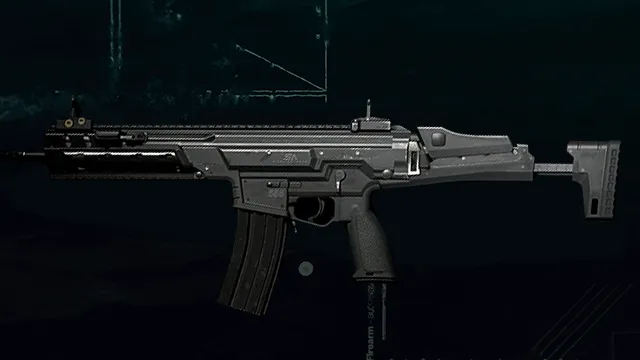

KILO 141
Fuzil de assalto totalmente automático com design ergonômico que melhora o manuseio, e uma cadência de tiro estável ajuda a manter o alvo na mira.
A Kilo 141 está de volta e pronta para arrasar no Multiplayer e no Call of Duty: Warzone. O manuseio suave da arma, recuo controlável e cadência de tiro estável permitem que ela brilhe em várias situações de combate, deixando claro por que a Kilo 141 era uma das favoritas em Verdansk. Agora que o local está de volta, é hora de reviver os dias de glória com esta Arma Primária poderosa.
CR-56 AMAX
Este fuzil de assalto leve 7,62 x 39mm totalmente automático é compacto e poderoso. Construído exclusivamente para uso militar, o fuzil padrão é letal em combates de médio alcance e facilmente configurável para diversas táticas de assalto.
Combinando disparos de alto dano com uma cadência de tiro rápida e bom manuseio, a CR-56 AMAX é a arma perfeita para médio alcance, capaz de eliminar alvos rapidamente. Neutralize inimigos com três a quatro tiros a até 25 metros, com potência suficiente para atravessar armaduras equipadas. Recargas rápidas permitem voltar à ação rapidamente, uma característica útil independentemente de como você personalizar a arma no Gunsmith.
HDR
Fuzil de precisão de ação por ferrolho anti-material, carregado com munição 12,7 x 108mm. As balas têm menor velocidade inicial, mas permanecem devastadoras mesmo a longas distâncias.
Veteranos de Verdansk conhecem o poder da HDR e o caos que um atirador pode causar com ela quando posicionado em pontos altos, como a infame Torre de Controle do Aeroporto. O longo alcance da arma e seu dano elevado a tornam favorita entre atiradores de elite, com seu som de disparo característico fazendo equipes correrem. Adicione o acessório de Cano Reforçado para ampliar ainda mais o alcance de dano e a velocidade da bala, e não se esqueça de segurar a respiração para disparos difíceis.
Bastões Kali
Eliminação em dois golpes. Velocidade de ataque extremamente rápida. Curto alcance.
Os infames Bastões Kali estão de volta, causando dano com golpes rápidos que derrubam seu alvo em um instante. Acerte-os com golpes de acompanhamento rápidos usando o ataque leve da arma ou elimine-os de forma mais dramática ao liberar o ataque pesado. Use os Bastões Kali no Multiplayer com a nova Vantagem Corte Rente para desferir um golpe rápido contra inimigos sem precisar trocar manualmente para o slot de Arma de Combate Corpo a Corpo Dedicada primeiro.